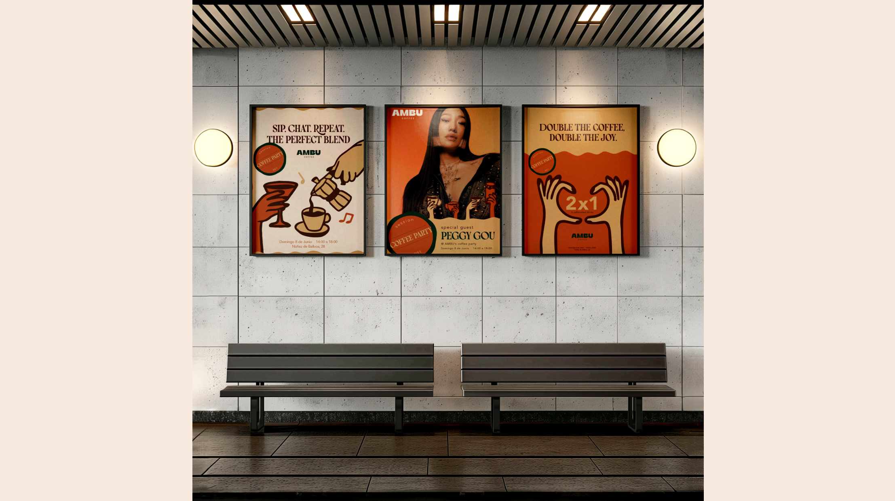
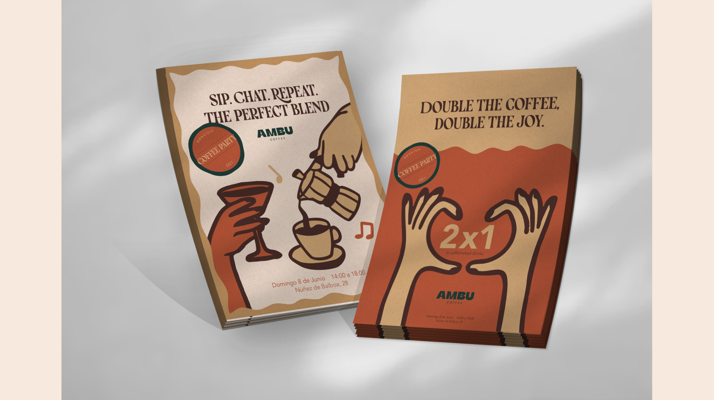

Diseño gráfico · Identidad efímera
Coffee Party @ Ambu
Una identidad gráfica temporal para convertir una cafetería en un espacio social animado por café, música y una atmósfera visual cálida.

Contexto
Coffee Party @ Ambu es un evento efímero que transforma la cafetería Ambu en un punto de encuentro acompañado por música de DJ y bebidas inspiradas en el café.
La propuesta plantea una pausa dentro del ritmo acelerado de la ciudad: un espacio cotidiano que adopta temporalmente una identidad más festiva.
Proceso
El lenguaje visual combina ilustraciones dibujadas a mano en Procreate, una estética cartoon y una paleta cálida con colores terrosos.
El sistema se construye a partir de carteles, flyers, menús y diferentes aplicaciones coherentes con el carácter relajado y cercano del evento.
Resultado
La identidad final crea una experiencia reconocible y versátil que une café, música e ilustración en un sistema gráfico alegre y acogedor.
Galería




Ficha técnica
- Disciplina
- Diseño gráfico e identidad efímera
- Herramientas
- Illustrator, InDesign y Procreate
- Año
- 2025